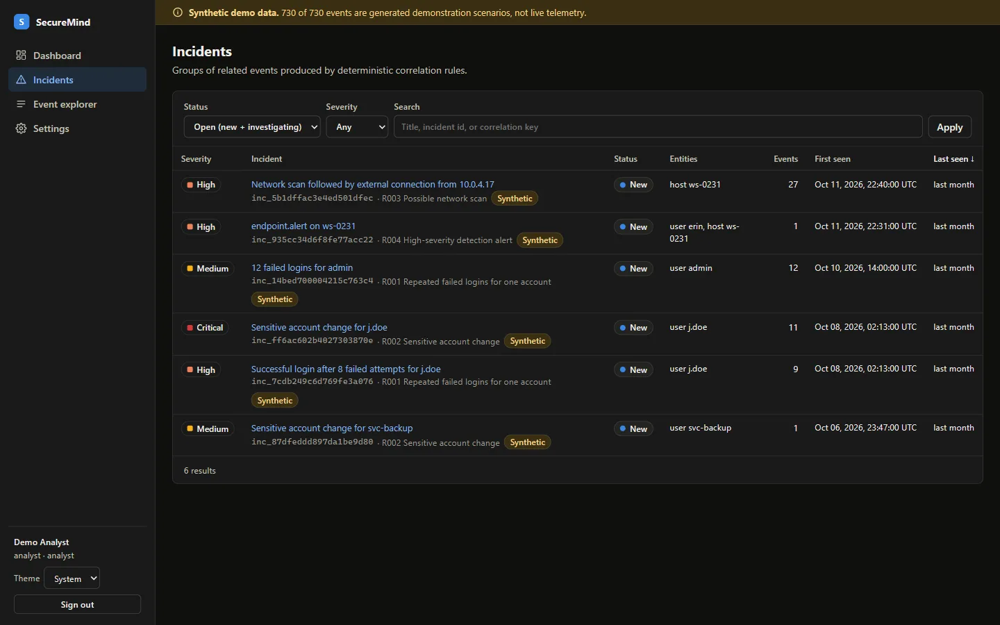

SecureMind
A security operations platform for triaging events and investigating incidents, built around one rule: an AI-written finding is only shown to an analyst if it cites the evidence it came from.
Every screenshot on this page is the real application running locally on its synthetic demo dataset (730 generated events). Nothing here is production telemetry, and the synthetic scenarios demonstrate the workflow, not detection accuracy.

The problem
Triage is a judgement made under time pressure: is this alert real, and what should happen next? Language models can summarise an incident in seconds, but a fluent summary that invents an IP address or overstates a login success is worse than no summary, because it is hard to catch.
SecureMind asks what an investigation assistant looks like when it is not allowed to make things up. Detection stays deterministic and explainable. The model only writes on top of it, and its output is checked against the evidence before anyone sees it.
How an event becomes an incident
- IngestEvents arrive through
POST /api/v1/eventswith an ingest-only API key bound to named sources, or through a CLI import that uses the same pipeline. Each item is validated against a strict schema with size limits; invalid items are reported by index while the rest of the batch continues. - Normalize and de-duplicateTimestamps become UTC, names are lower-cased, IPs become indicators. The internal ID is derived from a SHA-256 of source and event ID, so re-sending the same event is idempotent.
- CorrelateFour pure, unit-tested rules re-evaluate the affected time window and attach findings to an existing incident or open a new one. Severity only rises automatically and is never touched after an analyst overrides it.
- TriageAnalysts filter, sort and search incidents, change status and severity with a reason, and add notes labelled as observation, hypothesis or decision.
- InvestigateOn demand, the server builds a bounded evidence snapshot, sends it to the investigation provider, and stores the report only if it passes validation.

Architecture
A modular monolith: one Node.js process, one SQLite database, with module boundaries drawn so they can be split later. TypeScript runs end to end, and the event schema and report contract live in a shared package, so the API and the UI cannot drift apart.
| Decision | Why | Trade-off |
|---|---|---|
| TypeScript modular monolith | One language; shared zod schemas keep API contract and UI types in sync | Single process; boundaries designed for a later split |
SQLite first, via built-in node:sqlite | Transactional, zero native builds, zero operations for an MVP | Single writer; PostgreSQL migration path documented |
| Provider-independent investigation | App works offline with no API key; any model must pass the same gate | Strict gate rejects some useful reports, by design |
| Ingest keys bound to sources | A stolen key cannot submit events for other sources or read data | Key holder can still fabricate events for its own sources |
Detection rules
Detection is deterministic on purpose. Each rule is a pure function with fixed thresholds and a plain-language explanation that appears on the incident, so an analyst can see exactly why it fired.
| Rule | Logic | Severity |
|---|---|---|
| R001 | Five or more failed logins for one account within 15 minutes; escalates if a success follows within 30 minutes | Medium, high with success |
| R002 | MFA disabled, API token created or privileged role assigned for a user within 24 hours | Medium, raised for repeat changes or a preceding brute-force pattern |
| R003 | One source reaches 15 or more distinct address:port targets in 10 minutes, then egresses on an uncommon port | Medium, high with egress |
| R004 | Upstream alerts of high severity or above, grouped per host and type within an hour | Highest alert severity |
The evidence gate
The investigation assistant sits behind a one-method provider interface. The default provider is an offline, deterministic demo that restates rule logic and labels itself as demo output; an optional Claude provider uses structured JSON output. Whichever provider runs, its report passes through the same validator before it is stored:
- The report must match the schema exactly.
- Every section must cite event IDs, and every cited ID must exist in the evidence snapshot. One unknown ID rejects the whole report.
- IP addresses, user and host names, ports and counts in each claim must appear in the events that claim cites; an unrelated valid citation does not pass.
- Speculative wording is barred from observations, and hypotheses that go beyond their evidence must be marked low confidence.
- Recommendations with consequences are force-flagged for human approval. No automated response actions exist.
Event content is untrusted. Before evidence reaches a model it is serialised as JSON with <, > and & escaped, so a malicious event cannot close the evidence delimiter and inject instructions; regression tests cover that payload.

The limits are stated in the product, not hidden. Passing the gate proves a report is structured and grounded in real evidence; it does not prove the interpretation is correct. A supported identifier can still be described wrongly, and that residual risk is recorded in the threat model.
Security engineering
A security tool is a target, so the platform has its own STRIDE threat model with a residual-risk column, not just a list of mitigations. A selection:
| Threat | Mitigation in v0.1 | Residual risk |
|---|---|---|
| Credential guessing on login | scrypt hashes, generic errors, 10 attempts per minute per IP, failed logins audited | No per-account lockout or MFA yet |
| Poisoned telemetry creating misleading incidents | Authenticated ingestion, source-bound keys, server-assigned data class, strict schema | High: a key holder can fabricate events for its own sources |
| Prompt injection through event content | Escaped JSON evidence, instructions forbidden in system prompt, schema-constrained output, per-claim grounding | Medium: not yet tested against a live model |
| XSS through event content or notes | Text-only rendering, raw HTML injection banned by lint rule, CSP script-src 'self' | Low |
| SQL injection through filters | Prepared statements, allow-listed sort columns, escaped LIKE wildcards, tested | Low |
| Analyst denies making a change | Append-only audit log with actor, time, before and after values, and reason | Log is not yet tamper-evident |
Other controls: HttpOnly SameSite=Strict session cookies, a required CSRF header on writes, CORS and Origin allow-lists, body-size and batch limits, a trusted-proxy setting that refuses wildcards, and a secret scanner in the check pipeline.
Status and what is next
- DoneIngestion, correlation, incident management, evidence-gated investigation reports, analyst UI with light and dark themes, roles, audit log, synthetic dataset
- NextCI with gitleaks and semgrep, an independent security review of v0.1, API-key list and revoke commands, end-to-end browser tests
- PlannedCross-rule incident linking, entity pages, enrichment from asset and identity sources, a model-evaluation harness for citation precision and hallucination rate
- PlannedReal connectors (syslog/CEF, cloud audit logs), detection-as-code, PostgreSQL, SSO with MFA, multi-tenancy
How it is built
SecureMind uses a documented, AI-assisted engineering workflow: product scope, architecture decisions, the threat model and security requirements are written first, implementation is done with AI coding agents against those specs, and a separate agent performs independent review and testing. Every change has to pass formatting, linting, type checks, the test suite and a secret scan.
Known limitations
- Single tenant, single process, SQLite; not built for concurrent multi-node deployment or high event volumes.
- Users are managed from the command line; no SSO, MFA, password reset or account lockout.
- The demo provider restates rule logic; it does not reason about intent.